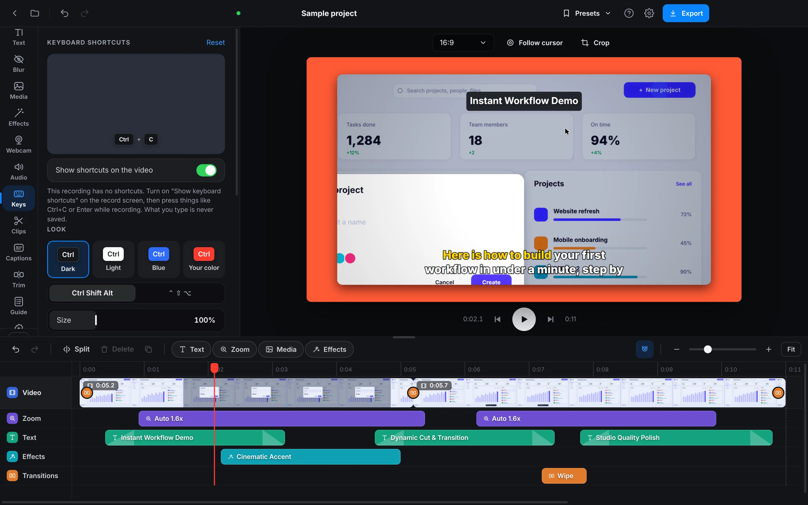
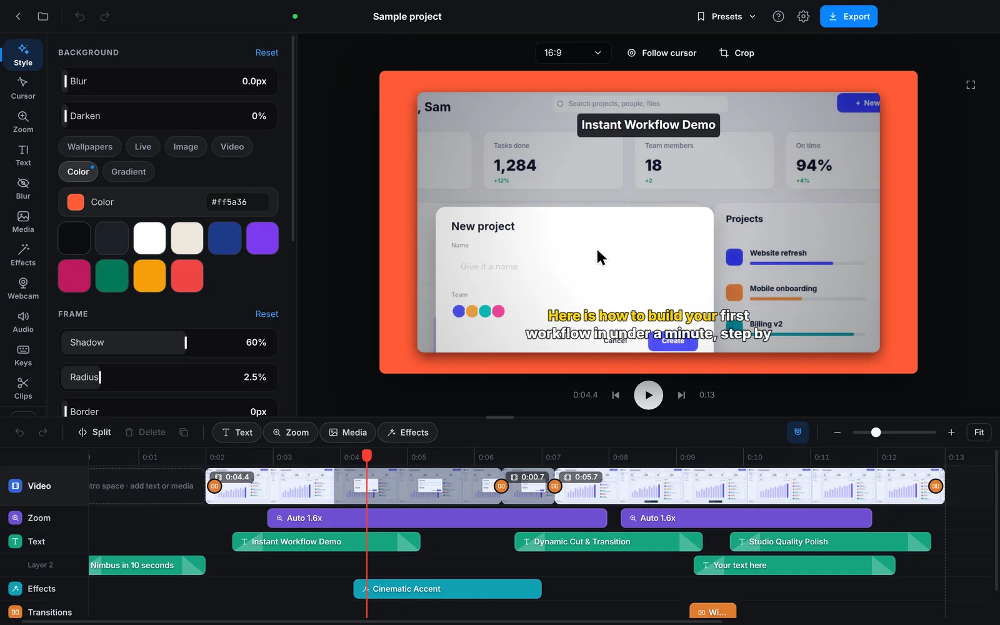

01
Step by step guides
Every click becomes a numbered step with a screenshot. Save as PDF or a web page.
Record like normal. Scrim adds the zooms, the frame, the cursor and the captions. You just hit export.
Windows 10 and 11 · Free · No watermark
Why Scrim
Most screen recordings are hard to watch. Tiny text, a cursor lost in the corner, long pauses. Scrim follows your clicks, your typing and your voice, and edits the video while you record. Zooms, captions and a clean frame, done before you are.
Drag the handle. Left is what you recorded, right is what Scrim made from it.


How it works

01
Pick a screen, a window or a browser tab. Add your mic, PC sound and webcam.

02
Every click becomes a smooth zoom on a clean background.

03
Words light up as you say them. Delete a word and it's cut from the video.
04
One click for YouTube, TikTok, LinkedIn, a GIF, or a step by step guide.
01
Every click becomes a numbered step with a screenshot. Save as PDF or a web page.

02
Keys you press show up as clean keycaps. What you type is never recorded.
03
Fan hum, keyboard clicks and echo, gone. Your volume evened out.
04
Loading screens and pauses get cut or sped up. You approve every change.

AB05
Your face in a circle or rounded box. Drag it anywhere on the preview.
06
Block out emails, passwords and names. Stays hidden even when the view zooms in.
07
Your logo, colors, font, intro and outro. Saved once, used everywhere.
keyframes to set
to export anywhere
caption styles
of your videos stay on your PC
FAQ
Yes. Every feature, no watermark, no account.
Windows 10 and 11. A graphics card makes exporting faster, but you don't need one.
No. Recordings and exports stay on your PC, and captions can run fully offline. Crash reports are off unless you turn them on. More on the privacy page.
Yes. New apps show that until they're signed. Click "More info", then "Run anyway". Scrim updates itself after that.
Tell us. Report a problem or suggest a feature. We read everything.